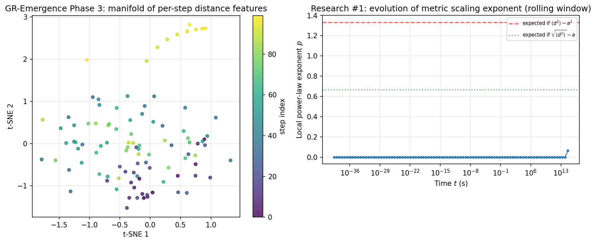

TopologyTtopo
Constraint, boundary, and the nilpotency condition ∂² = 0 as structural discipline.
DFC → ACEH → QNM
Engineering spine · QNM forward programme · not reverse fitting
About us
The Quantum Narrative School is an interdisciplinary theoretical programme founded by Nanjie Ma. It investigates how a high-dimensional quantum information structure— the Quantum Narrative Matrix (QNM)—can act as a generative substrate whose spectral and projection structure yields cosmological readouts.
Along the stack DFC → ACEH → QNM, the School treats QNM as a frozen spectral-readout layer: from parent N = 22 through mandatory remove-1 / phase quotient exp(iθ) to the calibration checkpoint Ncal = 21, then forward to eighteen cosmological observables—declared structure, not reverse fitting. Latest deposit: Zenodo 21444513 (v131).
From the mark
The emblem encodes the School’s three time arrows—
Ttopo / Talgo / Tthermo
(topology, algorithm, and thermodynamics)—around the generative complex phase
eiθ.
TtopoConstraint, boundary, and the nilpotency condition ∂² = 0 as structural discipline.
TalgoOrdered generation and constructive procedure—Order as an operative vertex of the mark.
TthermoObserver epoch and energetic arrow—readout anchored in thermodynamic time.
Theory and analysis
Primary texts of the programme. Dates follow the original publication timeline.
Work
Official notices and disclosures—original dates preserved from the live archive.
Archival page from the live programme site.
Archival page from the live programme site.
Archival page from the live programme site.
Archival page from the live programme site.
Archival page from the live programme site.
Archival page from the live programme site.
Latest scoreboards, code-integrity disclosure, and official web deep notes.
Cases and videos
Selected figures from the submission package. Legacy matrix videos remain reference atmosphere only.

Cosmic-web style figure from the main-paper set.

Comparison accompanying the H₀ distribution discussion.

6D correspondence related to N = 21.

Histogram of the quantum-geometric H₀ ensemble.

Diagnostics around the working matrix dimension.

Composite panel from the results set.
Legacy matrix videos are archival reference only. Claims and numbers follow the Zenodo deposit.
Contact
Prefer the Zenodo deposit and machine-readable registers over website rhetoric. Negative replications are valuable.
Open Zenodo record